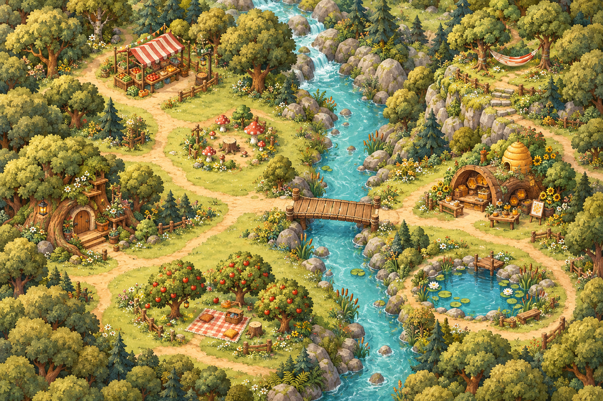
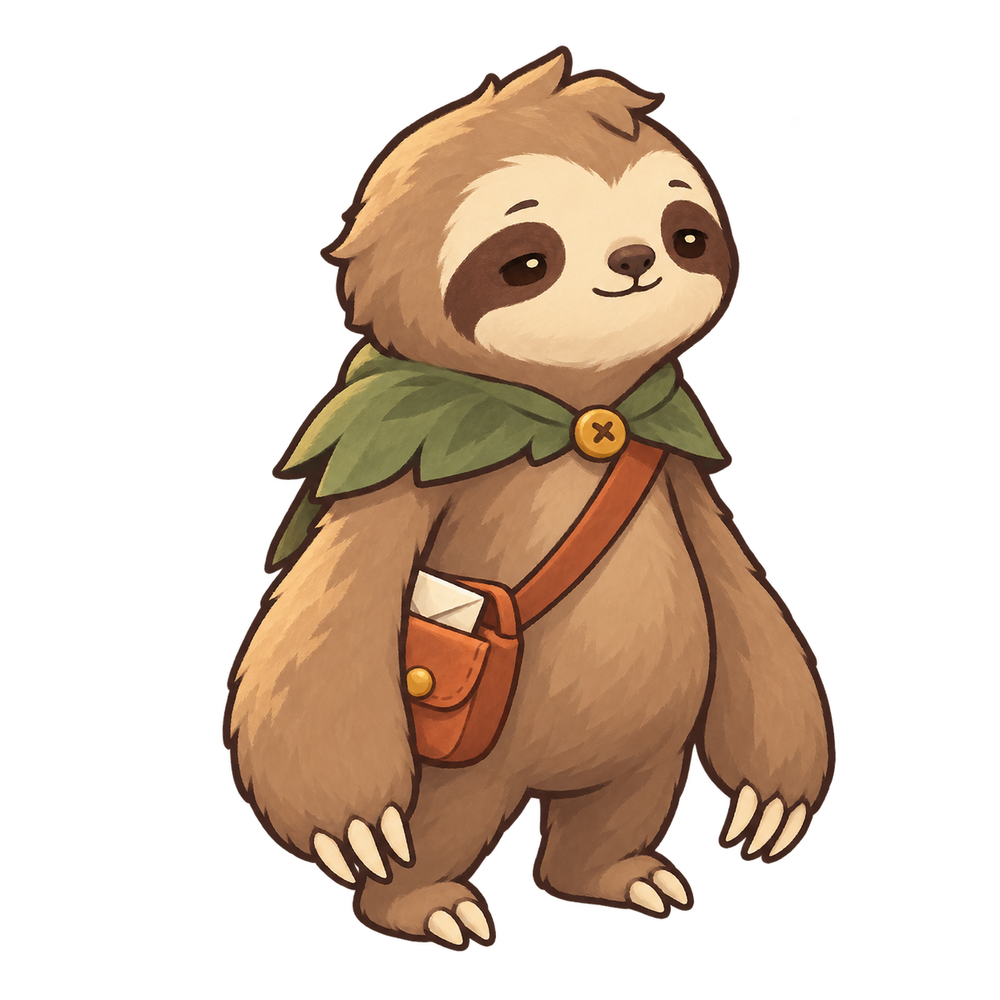

An afternoon, poorly supervised.
You provide the ambition. Mallow provides the complications.
Mossbrook Woods

A small sloth. A dangerously open schedule.

PERSON OF INTEREST“I have a good feeling about doing very little.”
Write one goal. Then let the afternoon happen.0 / 7
3 coins
0 food
6 / 8 energy
0 fame
0 friends
0 trouble